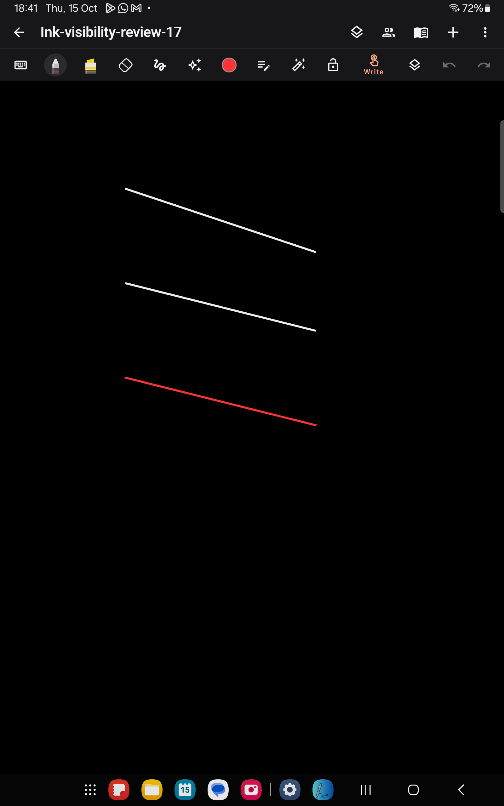
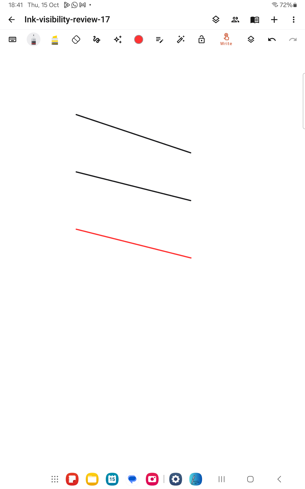

The connected Galaxy Tab had finger drawing disabled by the 1.6 S Pen default. Finger strokes therefore moved the viewport instead of creating ink. The active brush's colour and opacity were valid; the missing strokes were an input-mode problem.
Version 1.7 (23) restores finger writing as the default on all devices. Explicit saved choices remain respected. The tablet toolbar now labels the finger-mode control Write or Scroll. Writing was enabled on the connected tablet, and Notes Preview was updated without clearing its data. Two-finger navigation, pinch cancellation, page creation, momentum and collaboration remain available.
Actual finger swipes on the tablet created two neutral strokes and a third red stroke (#FF3333). The neutral strokes are light on dark paper and dark on light paper; red remains red. All three strokes remained visible after saving and reopening. Only a new review note was used for these drawing checks. The tablet's original dark mode was restored.


83 tests passed: 26 JVM and 57 Android tests, including collaboration and the new live-input pixel regression. The new test loads fresh preferences, draws a finger stroke, checks its pixels in dark mode, reloads it in light mode, and checks a chosen red stroke in both themes. Build and lint passed; lint reports 0 errors and 77 warnings.
Logs: build-ui-ink-17.log, build-ui-ink-all-tests.log, build-ui-ink-physical.log, build-ui-ink-colour-physical.log.
Installed APK: C:\Users\vardh\AndroidStudioProjects\Notepad\app\build\outputs\apk\device-preview\notes-preview.apk
SHA256: 7FADB7DEC8D3B2E8BECD74B467E8187239C91084D3AC1CFD982711CE4DE6F6EF
Normal package APK: C:\Users\vardh\AndroidStudioProjects\Notepad\app\build\outputs\apk\debug\app-debug.apk
SHA256: 6DC547B55D2BC26BA234B5AFF51A5540A30436F4254615BA6CBCB972A44D17B3
The original tablet app retains its data and separate signing certificate. The installed update is named Notes Preview.